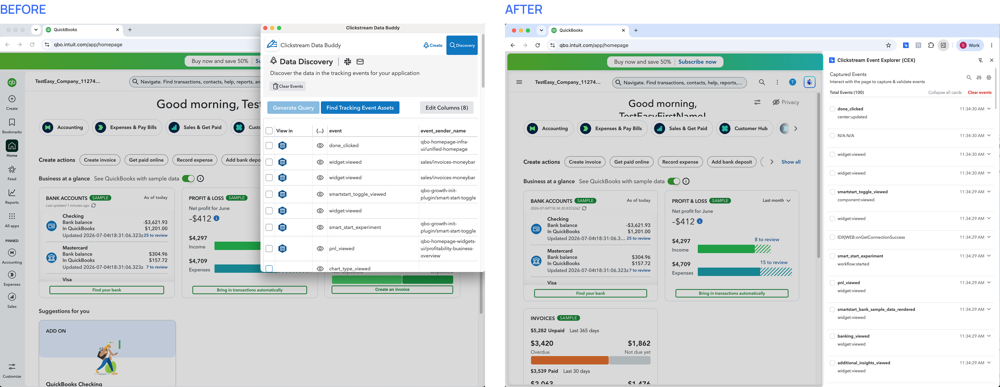
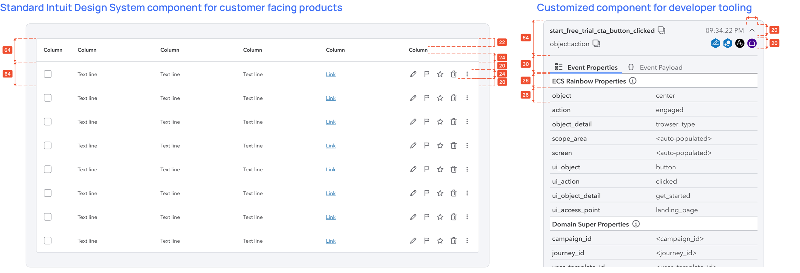
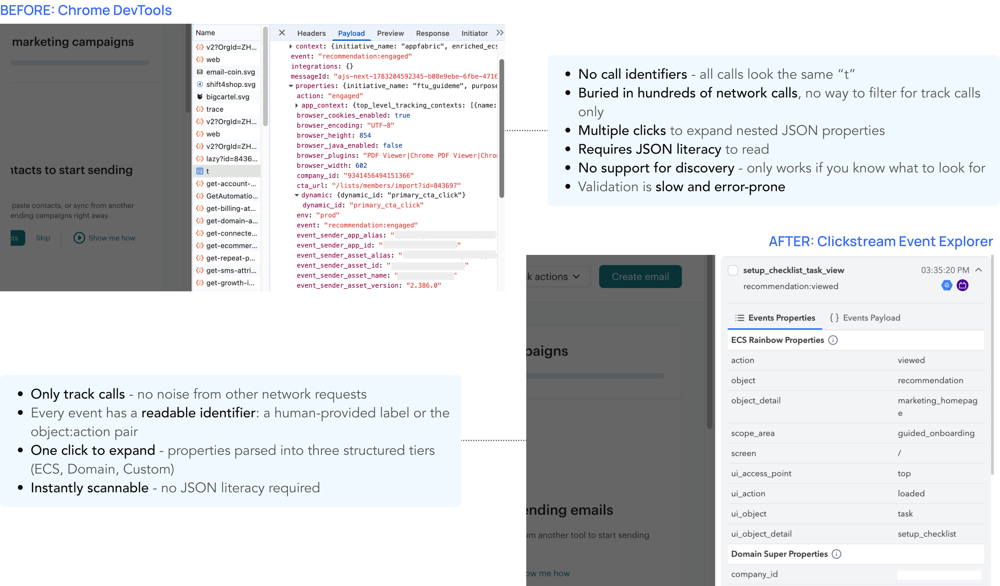
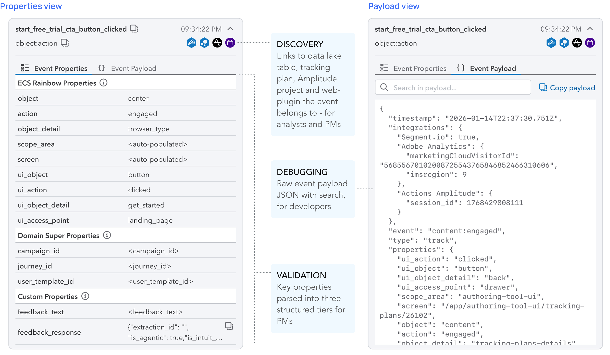
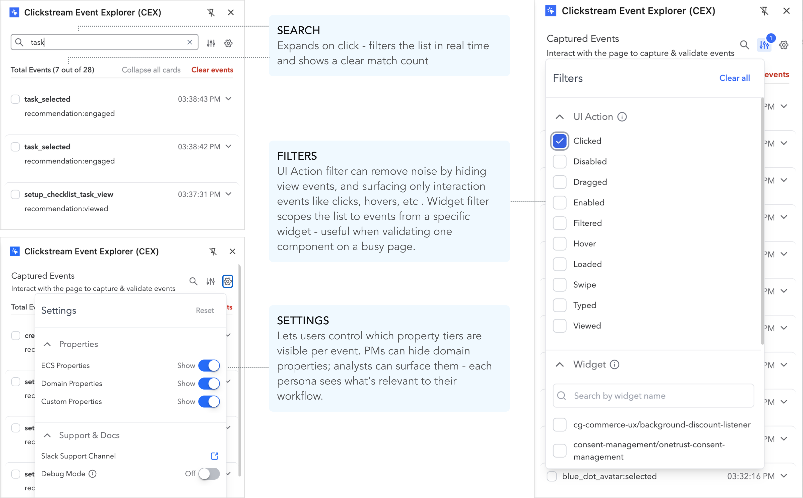

Overview
Every time a PM or analyst at Intuit ships a new feature, they need to verify that the right tracking events are firing — and that the data attached to those events is correct. The standard workaround was the browser's developer tools Network tab: filter through hundreds of raw network calls, click into each, and cross-reference nested JSON against a taxonomy document — one event at a time. On pages with multiple tracking calls, this could take an hour. Some PMs didn't have the technical fluency to do it at all, which meant validation either got skipped or depended on an engineer.
This friction showed up consistently in the contextual inquiry sessions the PM and I ran as part of a broader instrumentation platform overhaul. We observed every persona — PM, analyst, developer — hit the same wall at the validation and discovery step — one of the most time-consuming parts of the workflow, and the most addressable with a focused solution.
My role was to lead the full design cycle: framing the problem in research, building the prototype that secured director and VP-level alignment, co-authoring the PRD with the PM, and driving UAT through to the GA release in April 2026.
Final Designs & Impact
The Clickstream Event Explorer (CEX) is a Chrome side panel that captures every tracking event firing on any Intuit product page in real time — parsed, labeled, and organized the moment it fires.
Impact
CEX launched in GA in April 2026 and is live in Intuit's Chrome Web Store. The March 2026 beta was used by Consumer Group analytics and Marketing Operations teams during tax season — a high-stakes, time-pressured context — before the full GA release.
Within days of launch, users were sharing the extension unprompted across developer and PM channels. The spread was peer-to-peer, not mandated.
The feedback came unprompted from across all three target personas — PMs, data scientists, and engineers — within the first week of the GA launch.
Research
In Nov 2025, the PM and I ran contextual inquiry sessions with PMs, analysts, and developers across TurboTax, QuickBooks, and Mailchimp. We watched people try to validate and discover events as part of their actual workflows, not in a lab setting.
Three findings directly shaped the MVP:
Design Decisions
01. Side panel, not a separate popup window
The predecessor tool, Data Buddy, opened as a separate floating window. In practice, users were constantly toggling between the tool and the product they were testing — losing their place each time. I chose the side panel layout to keep the event stream and the product page visible simultaneously. It's the only layout that actually supports real-time validation: interact with the page, watch events appear, without ever switching contexts.
This decision had significant downstream implications. A docked panel at 350px wide is a fundamentally different design surface than a full browser tab — it forced every component decision toward compactness.

Separate window vs. side panel in same window — keeping both the event stream and the live page in view simultaneously.02. Designing for density — borrowing from tooling, not product UI
Intuit's design system is built for consumer-facing surfaces: larger type, generous spacing, comfortable touch targets. None of that scales to an event inspector panel where a single card needs to show a host of information, both, in the collapsed state and in the expanded state.
I developed a custom theme within the Intuit design System, taking direct inspiration from Chrome DevTools and other code editor interfaces — both of which have solved the same problem: surfacing dense technical information for expert users in a compact, scannable format. Smaller type, tighter row spacing, monospace labels for property names and values. This wasn't a deviation from the design system — it was an extension of it for a context the system wasn't originally designed for.

Standard IDS spacing vs. the custom compact theme — both standards-compliant, built for different reading contexts.03. What I scoped out and why
Discovery mode — the visual overlay. The prototype included a mode where all instrumented UI elements on a page would be visually highlighted, letting users see what was tracked without triggering anything. It was the strongest-rated concept in testing. But it required an inference pipeline and data engineering resources that didn't exist for the MVP. Shipping a working validation experience first — rather than waiting for the full vision — was the right call. Discovery mode is on the roadmap.
The strongest concept in testing — deferred to a future release in favour of shipping the validation experience first.Inline edit link — platform integration. Users wanted a button to jump from a captured event directly into the platform to edit event specs. I deprioritized this because we were actively replacing the existing tool with a new platform (Clickstream Studio), and building the integration into the old tool would have created throwaway work.
04. The Amplitude deep-link — reprioritized after beta
The direct jump to Amplitude was in my initial prototype but scoped for a later release. After the beta, it surfaced as the single most-requested fast-follow from users: validate that an event fires, then immediately chart it in Amplitude — without copying event names, switching tabs, and rebuilding the query from scratch. I worked with the PM to move it into the GA scope. It shipped in April 2026 and was widely appreciated by the PM community.
The Amplitude deep-link — validate an event fires, then immediately chart it without switching tabs or rebuilding the query.Prototype & Alignment
I used FigmaMake and V0 to vibe-code the extension running against a reconstructed Mailchimp homepage — giving stakeholders a real interaction, not a walkthrough.
The question shifted from "will this be useful?" to "when can we ship this?" The prototype was shown to VPs and Directors of Product Management and Engineering for Data & Analytics. It removed the need to explain why structured property parsing mattered or why the side panel was the right call — both were self-evident. It also surfaced the consistent multi-event selection ask, which is what put the Amplitude deep-link back on the MVP roadmap.
Interactive FigmaMake prototype that ran in a browser against a reconstructed Mailchimp product page — giving stakeholders a real interaction, not a walkthrough.Design Deep Dive
The event card: from raw beacon to readable validation

The same event, two views. DevTools requires 4+ clicks and JSON literacy. CEX is readable on first glance.
Three property tiers, always separated — PMs validate taxonomy; developers inspect raw payloads; analysts find their table and plugin in one place.Search and filter
On a page with 30+ events in a session, the list itself becomes noise. Search by event ID lets users zero in on a specific event without clearing the session. Filters let them narrow by interaction type or widget name.

Search, filtering and settings - controls that let users narrow down on events and customize their viewShipping with an interactive product tour
No matter how focused or simple a tool is, first-time users shouldn't have to go find documentation to understand it. I pushed for us to hold the GA release until we had an interactive product tour in place — one that surfaces the main features in context, the first time a user opens the extension. The goal was to make the value immediately legible without any external onboarding material.
The interactive product tour walks users through CEX's core features on first launch — no docs, no handholding from the team.